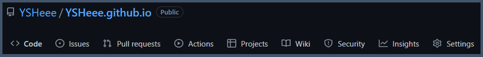
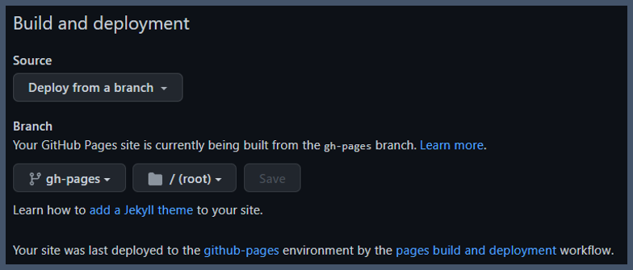

Material for MKdocs + Github pages¶
Info
- Material for MKdocs Getting Started MKdocs-Link
- Github Pages Quick start Github-pages-Link
- Useful Blog-1
Material for MKdocs¶
- Install and Create
- Set up the Minimal configuration
- Verify that you can run mkdocs-web using localhost
Github Pages¶
- with GitHub Actions
You Copy the ci.yml Copy-Link
And paste ./github/workflows/ci.yml - Github push
- Set up Github Pages
- Under your Mkdocs Repository name, click Settings. 
- In the "Code and automation" section of the left sidebar, click Pages.
- Build and deployment
- Source: Select Deploy from a branch
- Branch: use the gh-pages Branch and select a publishing source.
- Visit your new website